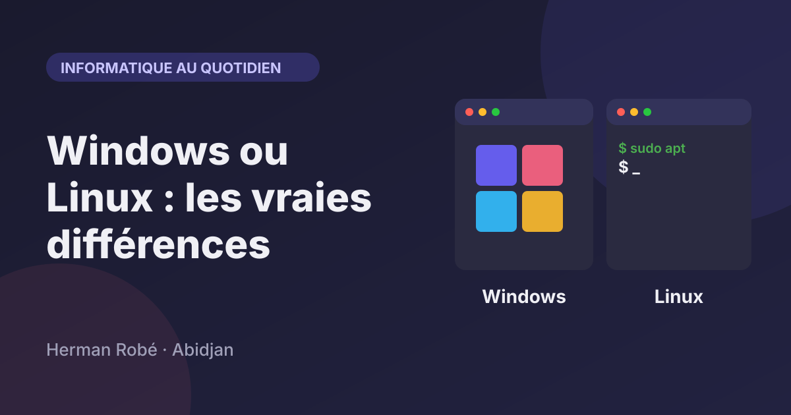
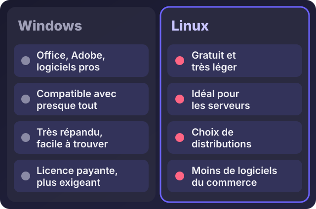
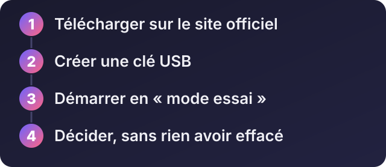

Accueil / Blog / Informatique au quotidien
Informatique au quotidienWindows ou Linux : quelles sont les vraies différences ?

Écouter cet article · environ 4 min
« Linux, c'est mieux que Windows ? » On me le demande souvent, parfois avec enthousiasme, parfois avec méfiance. La vérité est moins spectaculaire : ce sont deux systèmes d'exploitation différents, qui conviennent à des usages différents. Voici ce qu'il faut savoir pour choisir.
Un système d'exploitation, c'est quoi ?
C'est le logiciel de base de votre ordinateur : celui qui démarre la machine, fait fonctionner l'écran, le clavier et le Wi-Fi, et sur lequel tous les autres programmes s'installent. Windows est le plus répandu sur les ordinateurs personnels. Linux est un autre système, gratuit, qui existe sous plusieurs formes appelées distributions.
Windows : ses points forts
- La compatibilité. Presque tous les logiciels du commerce existent pour Windows : Microsoft Office, les logiciels de comptabilité, la suite Adobe, la plupart des jeux.
- Le matériel. Les fabricants fournissent leurs pilotes pour Windows, donc imprimantes, scanners et cartes marchent généralement sans souci.
- La familiarité. Beaucoup de gens le connaissent, et il est facile de trouver de l'aide.
Ses limites : la licence est payante, il demande un ordinateur assez récent, les mises à jour s'imposent parfois au mauvais moment, et il est la cible de la plupart des virus.
Linux : ses points forts
- Il est gratuit et se met à jour sans frais.
- Il est léger : certaines distributions redonnent vie à un ordinateur ancien.
- Il est solide et sûr, moins visé par les virus classiques.
- Il domine les serveurs : la plupart des sites web tournent sur un serveur Linux.
- Il est personnalisable, et vous gardez le contrôle sur ce qui s'installe.
Ses limites : certains logiciels du commerce n'existent pas (la suite Adobe, par exemple), il demande un petit temps d'apprentissage, et le support des fabricants de matériel est plus inégal.

Les distributions Linux, en bref
Linux n'est pas un seul produit : c'est une famille. Pour le grand public, trois noms reviennent :
- Linux Mint : conçu pour qui vient de Windows, avec un bureau très familier.
- Ubuntu : très répandu, avec beaucoup de documentation en ligne.
- Xubuntu et Lubuntu : des versions plus légères, pour les ordinateurs modestes.
Pour les serveurs, on utilise le plus souvent Ubuntu Server ou Debian.
Lequel choisir selon votre usage
- Vous travaillez avec Office, un logiciel de comptabilité ou la suite Adobe : restez sur Windows. Les alternatives existent, mais vous perdriez du temps.
- Vous utilisez surtout un navigateur, des documents et de la messagerie : Linux convient très bien, et c'est une excellente solution pour un ordinateur ancien.
- Vous êtes développeur web : les deux conviennent. Sous Windows, vous pouvez même utiliser Linux à l'intérieur grâce à WSL.
- Vous hébergez un site ou une application : Linux, sans hésiter.
- Vous jouez beaucoup : Windows reste le plus simple.
Essayer Linux sans rien risquer

Vous n'avez pas besoin d'effacer Windows pour essayer. La plupart des distributions proposent un mode essai : vous démarrez depuis une clé USB, vous testez, et en redémarrant sans la clé, vous retrouvez votre ordinateur intact.
- Téléchargez la distribution sur son site officiel.
- Créez une clé USB d'installation (comme pour Windows, avec un outil tel que Rufus).
- Démarrez sur la clé et choisissez l'essai.
- Décidez, quand vous avez vu si vos besoins sont couverts.
Mon avis
Il n'y a pas de gagnant universel. Windows est le choix le plus simple pour la majorité des usages professionnels, à cause des logiciels. Linux est le meilleur choix pour les serveurs, pour les ordinateurs anciens et pour ceux qui aiment comprendre leur machine. Si vous hésitez, essayez Linux en mode essai : cela ne coûte que le temps de créer une clé.
Besoin d'aide pour choisir, installer ou configurer un système, sur un seul poste ou sur tout votre parc ? Écrivez-moi sur WhatsApp, je vous conseille selon votre activité.